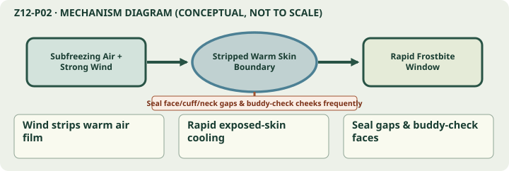

Z12-P02 · Extreme environments · New manuscript
Manage wind chill and exposed-skin frostbite windows in bitter cold
Protect exposed face, nose, ears and fingers when subfreezing air and strong wind accelerate tissue freezing.
When it applies · Subfreezing windy travel across Upper Midwest winter fronts, open lakeshores and exposed ridges.
Equipment · Windproof shell with hood, insulated face/neck gaiter, goggles, insulated mittens and buddy-check habit.

Actions
- Understand wind chill accurately: wind strips away the body's thin warm boundary layer, speeding skin cooling and frostbite onset dramatically (while NOT lowering the freezing temperature of inanimate gear below air temperature).[E15]
- Cover cheeks, nose, ears, wrists and fingers cleanly with windproof loose-fitting layers before stepping into bitter headwinds—use goggles in extreme wind chill to protect eyes and bridge of nose.[E15, E10, T04]
- Run frequent buddy checks on each other's faces for pale waxy patches or loss of feeling, because numb skin stops hurting right as freezing begins.[T04, E15, E11]
Failure recognition · Walking into a 25-mph subzero headwind with exposed cheeks and tight thin gloves until fingers and nose freeze silently.[E15, T04]
Verify · Confirm zero bare skin gaps at hood, cuff and neck seals and pair companions for mutual face checks every 15–20 minutes.[E15, E11, ED]
Stop or change course · Numbness, hard/waxy patches or severe biting cold wind-chill warnings require immediate retreat to warm wind-blocked shelter and clinical frostbite screening.[E15, T04, T03]
Evidence and editorial notes
- E10 · NWS · What To Do If You're Caught in a Winter Storm (current web edition)
- Section: Outside > Protect yourself from frostbite and hypothermia · Conditions: Outdoor winter storm
Support: Keep clothing dry and avoid overexertion. Wetness accelerates cooling.
Limitations: Cotton retains moisture and accelerates conductive and evaporative heat loss. · Conflicting evidence: None; reinforces moisture-management layering.
Editorial note: Links sweat management to overnight insulation integrity. · Specialist reviewer: Cold-weather shelter and wilderness medicine
Primary source · checked 2026-11-24 - E11 · NPS · Hike Smart (current web edition)
- Section: Plan your hike; Stay together · Conditions: Groups on hiking routes
Support: Choose a route suited to the group's abilities and hike at a pace that keeps the group together.
Limitations: Fast hikers moving ahead at junctions is a leading driver of preventable separation. · Conflicting evidence: None; aligns with SAR prevention principles.
Editorial note: Core reference for group accountability and pacing cards. · Specialist reviewer: Group leaders and search and rescue
Primary source · checked 2026-11-24 - E15 · NWS · Cold Weather Safety (current web edition)
- Section: Cold Weather Safety > Wind Chill and Dressing for Cold · Conditions: Cold, windy conditions where exposed skin cools rapidly
Support: Wind removes the thin warm air boundary layer around skin and permeable fabrics, sharply accelerating heat loss and frostbite onset; windproof outer shells and sheltered microclimates mitigate convective loss.
Limitations: Wind chill charts apply to exposed skin and do not change freezing point of water or equipment. · Conflicting evidence: None; clarifies physical mechanism of convective heat loss.
Editorial note: Supports wind-block geometry, shell layering, and wind-chill risk decisions. · Specialist reviewer: Cold-weather shelter and meteorology
Primary source · checked 2026-11-24 - T03 · CDC · Preventing Hypothermia (current web edition)
- Section: Warning signs; What to do · Conditions: Cold exposure and suspected hypothermia
Support: Confusion, slurred speech and drowsiness are warning signs. Obtain medical attention and protect from further cold.
Limitations: Shivering may stop as hypothermia worsens; absence of shivering is not reassurance. · Conflicting evidence: None; aligns with WMS cold guidelines.
Editorial note: Core neurological red-flag trigger for stopping activity and calling rescue. · Specialist reviewer: Wilderness medicine
Primary source · checked 2026-11-24 - T04 · Wilderness Medical Society · Frostbite clinical practice guideline 2024 update (2024)
- Section: Field treatment scenarios and Table 1 · Conditions: Suspected frostbite outside immediate medical care
Support: Avoid refreezing. Whether to actively thaw depends on ability to keep tissue thawed and evacuate. Detailed treatment requires clinical review.
Limitations: Field assessment cannot reliably determine final tissue depth. · Conflicting evidence: Supersedes outdated rubbing or snow-pack thawing myths.
Editorial note: Retained for cross-zone cold-injury stop boundaries. · Specialist reviewer: Wilderness medicine
Primary source · checked 2026-11-24
Source lineage · NWS cold weather safety; new manuscript · Classification · New manuscript.